WSS推荐系统学习笔记2：召回1
1 基于物品的协同过滤ItemCF
1.1 ItemCF的原理
推荐系统如何知道《笑傲江湖》与《鹿鼎记》相似？
- 看过《笑傲江湖》的用户也看过《⿅⿍记》
- 给《笑傲江湖》好评的用户也给《⿅⿍记》好评
1.2 ItemCF的实现
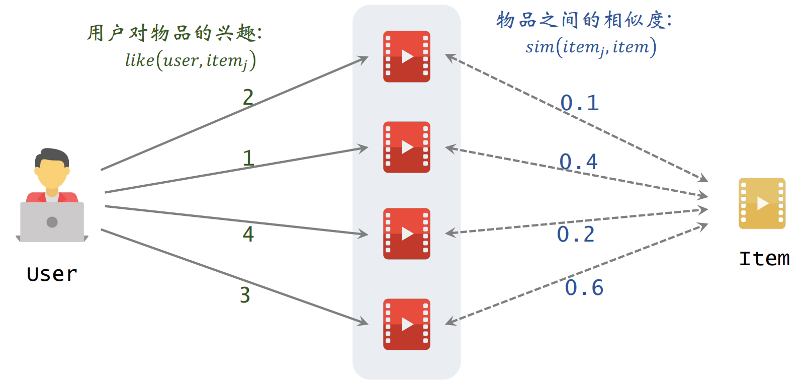
预估用户对候选物品的兴趣：
左边是用户对物品的兴趣，右边是两个物品之间的相似度
根据上面的公式进行计算即可得到：
表示用户对候选物品的兴趣，比如有多个候选物品，则可以计算用户对每一个物品的候选分数，然后选出分数较高的几个物品。
1.3 物品的相似度
两个物品的受众重合度越⾼，两个物品越相似。例如，喜欢《射雕英雄传》和《神雕侠侣》的读者重合度很⾼，则可以认为《射雕英雄传》和《神雕侠侣》相似。
两个物品不相似：红色物品和绿色物品的用户之间没有交集
两个物品相似：红色物品和绿色物品的用户之间有交集
喜欢物品 的用户记作集合 ，喜欢物品 的用户记作集合 ，定义交集 ，则两个物品的相似度：
注： 公式没有考虑喜欢的程度 ，喜欢就记为1，不喜欢就记为0
考虑用户喜欢物品的程度：
上述公式就是余弦相似度，把每个物品表示为一个向量，向量的每个元素表示每个用户的兴趣分数。
1.4 小结
ItemCF 的基本思想是根据物品之间的相似度做推荐。即如果用户喜欢物品 ，⽽且物品 与 相似，那么用户很可能喜欢物品 。
所以需要预估用户对候选物品的兴趣：
计算两个物品的相似度：把每个物品表示为⼀个稀疏向量，向量每个元素对应⼀个用户。相似度 就是两个向量夹角的余弦。
1.5 ItemCF 召回的完整流程
1.5.1 事先做离线计算
建⽴“用户 → 物品”的索引：
- 记录每个用户最近点击、交互过的物品 ID
- 给定任意用户 ID，可以找到他近期感兴趣的物品列表
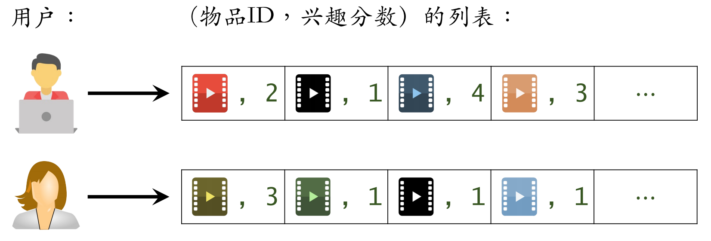
建⽴“物品 → 物品”的索引：
- 计算物品之间两两相似度
- 对于每个物品，索引它最相似的 个物品
- 给定任意物品 ID，可以快速找到它最相似的 个物品
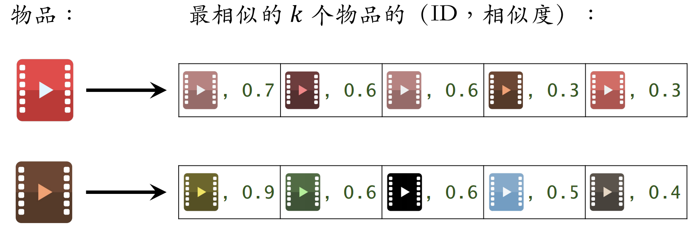
1.5.2 线上做召回
可以按照以下步骤线上做推荐：
- 给定用户 ID，通过“用户 → 物品”索引，找到用户近期感兴趣的物品列表（last-n）
- 对于 last-n 列表中每个物品，通过“物品 → 物品”的索引，找到 top-k 相似物品
- 对于取回的相似物品（最多有 个），用公式预估用户对物品的兴趣分数
- 返回分数最⾼的 100 个物品，作为推荐结果
索引的意义在于避免枚举所有的物品。用索引离线计算量⼤，线上计算量⼩。
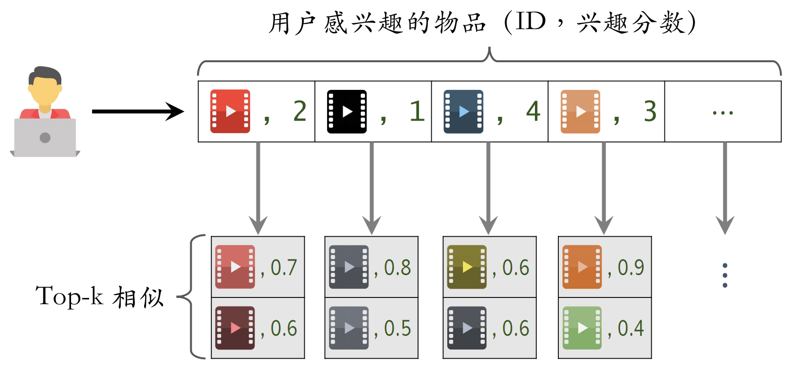
1.6 总结
1.6.1 ItemCF的原理
用户喜欢物品 ，那么用户喜欢与物品 相似的物品 。
**物品相似度：**如果喜欢 、的用户有很大的重叠，那么 与 相似。公式如下：
1.6.2 ItemCF召回通道
维护两个索引：
- 用户 → 物品列表：用户最近交互过的 个物品
- 物品 → 物品列表：相似度最⾼的 个物品
线上做召回：
- 利用两个索引，每次取回 个物品
- 预估用户对每个物品的兴趣分数：
- 返回分数最高的100个物品，作为召回结果
2 Swing 召回通道
2.1 原理介绍
Swing 模型的原理就是给用户设置权重，解决小圈子问题。
喜欢物品 的用户记作集合 ，喜欢物品 的用户记作集合 ，定义两个用户的重合度：
用户 和 的重合度⾼，则他们可能来⾃⼀个⼩圈⼦，要降低他们的权重。
喜欢物品 的用户记作集合 ，喜欢物品 的用户记作集合 ，定义交集 ，则两个物品的相似度：
2.2 总结
Swing 与 ItemCF 唯⼀的区别在于物品相似度。
- **ItemCF：**两个物品重合的用户⽐例⾼，则判定两个物品相似。
- **Swing：**额外考虑重合的用户是否来⾃⼀个⼩圈⼦。
同时喜欢两个物品的用户记作集合 ，对于 中的用户 和 ，重合度记作 。两个用户重合度大，则可能来自一个小圈子，权重降低。
3 基于用户的协同过滤 UserCF
推荐系统如何找到跟我兴趣非常相似的网友呢？
- ⽅法⼀：点击、点赞、收藏、转发的笔记有很⼤的重合。
- ⽅法⼆：关注的作者有很⼤的重合。
3.1 UserCF 的实现
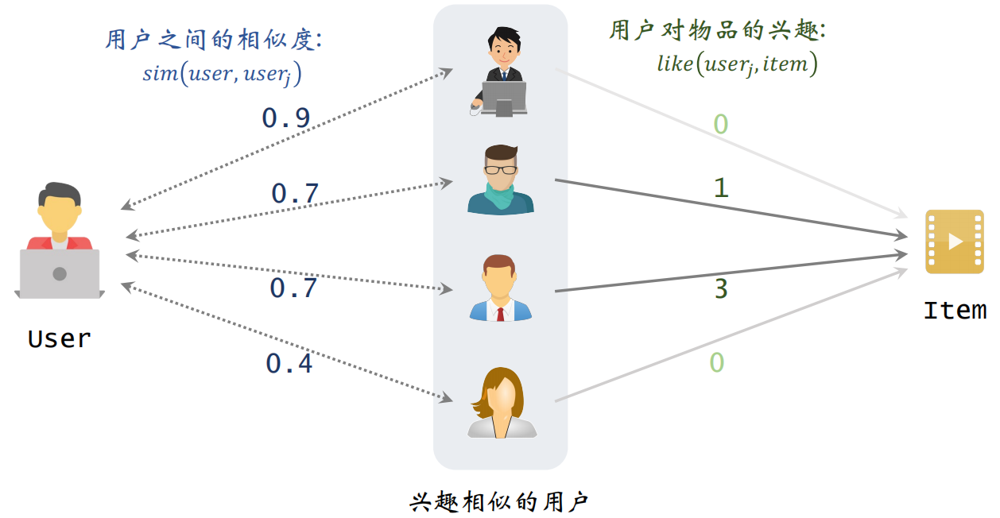
预估用户对候选物品的兴趣：
根据上述公式计算的结果如下，表示左边用户对右边物品的兴趣。
3.2 用户之间的相似度
两个用户不相似：喜欢的物品没有重合
两个用户相似：喜欢的物品有重合
3.2.1 计算用户相似度
喜欢物品 的用户记作集合 ，喜欢物品 的用户记作集合 ，定义交集 。定义两个用户的重合度：
3.2.2 降低热门物品权重
越热门的物品，对于计算用户相似度是没有价值的。反过来，重合的物品越冷门，说明两个人兴趣更加相似。所以需要降低热门物品的权重。
修改相似度计算公式如下：
为什么这里要用 呢？
- ：喜欢物品 的用户数量，反映物品的热门程度
3.3 UserCF完整召回流程
3.3.1 事先做离线计算
建⽴“用户 → 物品”的索引：
- 记录每个用户最近点击、交互过的物品 ID
- 给定任意用户 ID，可以找到他近期感兴趣的物品列表
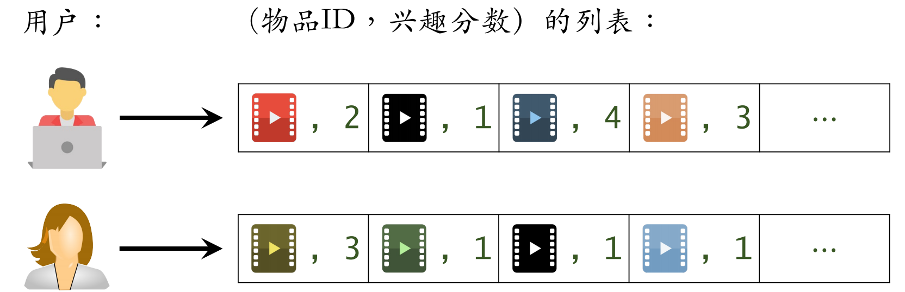
建⽴“用户 → 用户”的索引：
- 对于每个用户，索引他最相似的 个用户
- 给定任意用户 ID，可以快速找到他最相似的 个用户
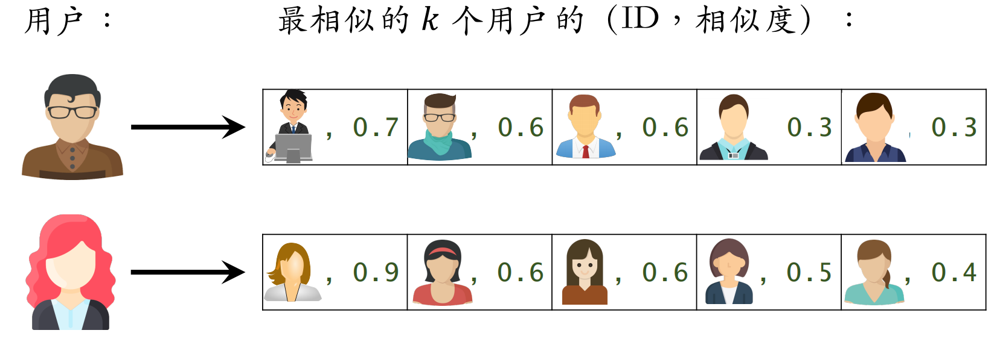
3.3.2 线上做召回
- 给定用户 ID，通过“用户 → 用户”索引，找到 top-k 相似用户
- 对于每个 top-k 相似用户，通过“用户 → 物品”索引，找到用户近期感兴趣的物品列表（last-n）
- 对于取回的 个相似物品，用公式预估用户对每个物品的兴趣分数
- 返回分数最⾼的 100 个物品，作为召回结果
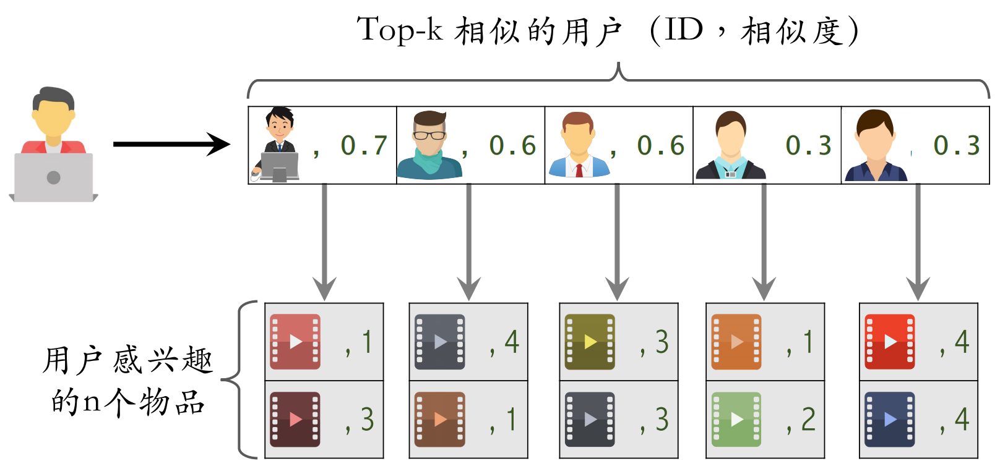
3.4 总结
**UserCF 的基本思想：**用户 跟用户 相似，而且 喜欢某物品，那么 也可能喜欢该物品。
**用户相似度：**如果用户 跟用户 喜欢的物品有很大重叠，那么 和 相似，计算公式为：
4 离散特征的处理
离散特征在推荐系统中很常见，常见的离散特征如下：
- 性别：男、⼥两种类别。
- 国籍：中国、美国、印度等200个国家。
- 英⽂单词：常见的英文单词有几万个。
- 物品ID：小红书有几亿篇笔记，每篇笔记有⼀个ID。
- 用户ID：小红书有几亿个用户，每个用户有⼀个ID。
离散特征的处理分两步：
- 建立字典：把类别映射成序号。
- 向量化：把序号映射成向量。
- One-hot 编码：把序号映射成⾼维稀疏向量
- Embedding：把序号映射成低维稠密向量
4.1 独热编码
独热编码是用和物品类别数量一样维数的向量表示来类别，例如使用2维向量来表示性别：
- 未知 → 0 → [0, 0]
- 男 → 1 → [1, 0]
- 女 → 2 → [0, 1]
4.1.1 优点
- **解决分类数据处理问题：**独热编码将离散分类特征转换为机器学习算法易于处理的二进制格式，提高了算法对离散特征的处理能力。
- **避免引入数值偏误：**通过将每个类别映射到独立的二进制向量，独热编码消除了类别间可能存在的错误数值关系，从而避免了算法基于这些关系做出不准确的预测。
4.1.2 缺点
- **维度增加：**当类别数量较多时，独热编码会显著增加特征空间的维度，可能导致计算复杂性和过拟合问题。
- **信息损失风险：**独热编码可能无法充分捕捉类别间的潜在关系或顺序信息，从而在某些情况下导致有用信息的丢失。
4.2 Embedding
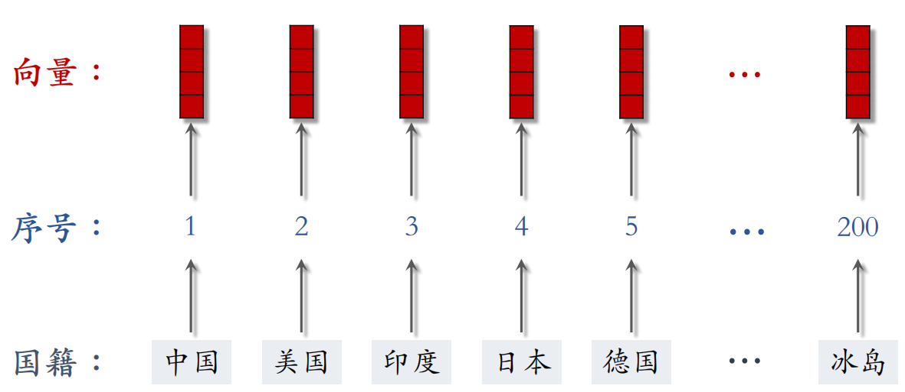
Embedding 把每个序号映射成一个低维向量，参数数量计算如下：
例如，设 Embedding 得到的向量都是 4 维的，一共有200个国籍，那么参数数量为 。
4.2.1 Embedding得到的向量的物理意义
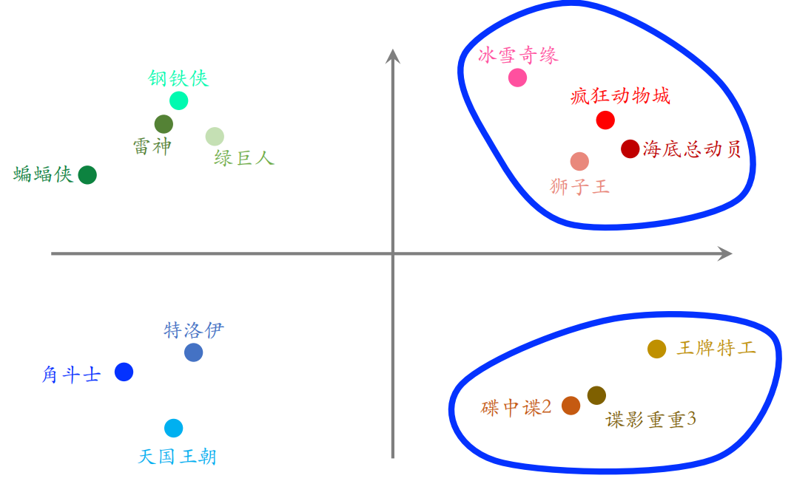
图中的一个点是每个物品的 Embedding，相邻的点关系越接近。可以通过将两个无法比较的文字映射成向量，接下来就能实现对他们的计算。
4.3 总结
离散特征处理有两种方法：独热编码和词嵌入。而当类别很大的时候，使用词嵌入。
5 矩阵补充
5.1 模型结构
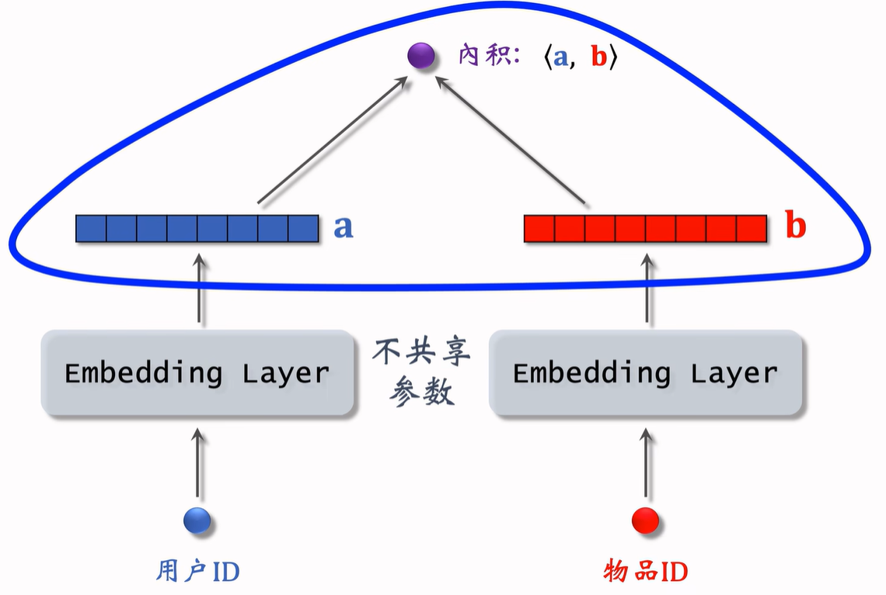
上面这个图展示了如何使用 Embedding 做推荐，模型的输入是一个用户 ID 和物品 ID，模型的输出是一个实数，是用户对物品兴趣的预估值。这个数越大，表示用户对物品越感兴趣。这个模型就是矩阵补充模型。
5.2 模型训练
开始训练之前，要准备一个数据集：（用户 ID，物品 ID，兴趣分数）的集合，记作 。
数据集中的兴趣分数是系统记录的，分数最低是 0 分，最高是 4 分，比如：
- 曝光但是没有点击记 0 分
- 点击、点赞、收藏、转发各记 1 分
之后把用户 ID 和物品 ID 映射成向量，例如第 号用户映射为向量 ，第 号物品映射为向量 。就变成了一个优化问题的求解，得到参数 和 ：
5.3 为什么是矩阵补充
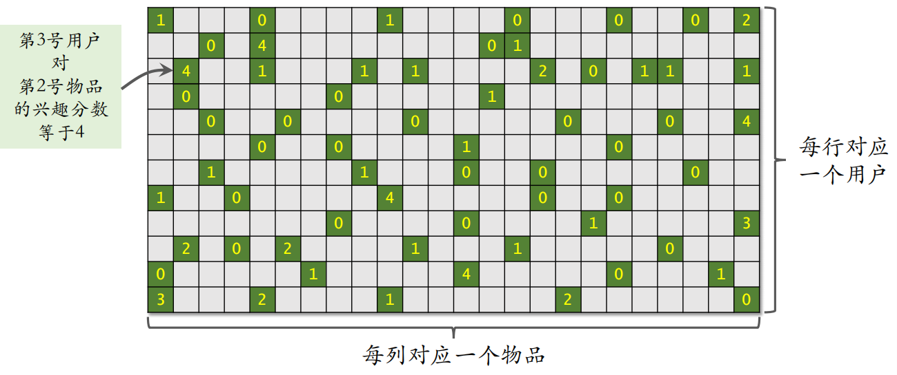
可以上述上述内容看成一个矩阵，其中绿色位置表示曝光给用户的物品；灰色位置表示没有曝光。之后可以计算出还未曝光的物品对于用户的吸引力，从而进行推荐。
但是矩阵补充方法在实践中的效果并不是很好，原因如下：
-
仅用 ID embedding，没利用物品、用户属性。
-
物品属性有类⽬、关键词、地理位置、作者信息；
-
用户属性有性别、年龄、地理定位、感兴趣的类⽬；
双塔模型可以看做矩阵补充的升级版。
-
-
负样本的选取方式不对。
样本是用户—物品的二元组，记作 。
-
正样本：曝光之后，有点击、交互等行为（正确的做法）；
-
负样本：曝光之后，没有点击、交互（错误的做法）；
-
-
做训练的方法不好。
做向量的内积 不如余弦相似度，用均方损失（回归），不如用交叉熵损失（分类）。
5.4 线上服务
在训练好模型之后，可以把模型用作推荐系统中的召回通道。做完训练之后，要把模型存储在正确的地方，便于做召回。
训练得到矩阵 和 ：
- 的每一列对应一个用户
- 的每一列对应一个物品
把矩阵 的列存储到 key-value 表，其中 key 是用户 ID，value 是 的一列，给定用户 ID，返回一个向量（用户的 embedding）。而矩阵 的存储和索引比较复杂。
之后可以做线上服务，具体来说，把用户 ID 作为 key，查询 key-value 表，得到该用户的向量，记作 。查找用户 最有可能感兴趣的 各物品，作为召回结果。
其中第 号物品的 embedding 向量记作 ，内积 是用户对第 $i $ 号物品兴趣的预估，并计算返回内积最大的 个物品。
如果枚举所有物品，时间复杂度正比于物品数量
5.5 近似最近邻查找
在用户向量 作为 query，查找使得 最大化的物品 时，暴力枚举速度太慢，实践中使用近似最近邻查找（Approximate Nearest Neighbor Search）。
Milvus、Faiss、HnswLib 等向量数据库均支持近似最近邻查找。
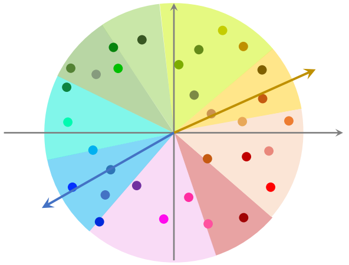
在对数据上线之前，先对数据做预处理，把数据划分为很多区域，至于如何划分，取决于衡量距离的方法。划分后每个区域用一个向量表示，这些向量的长度都是1，并建立索引，把每个区域的向量作为 key，区域中所有点作为 value。给定一个向量，可以快速取回这个向量中所有的点。
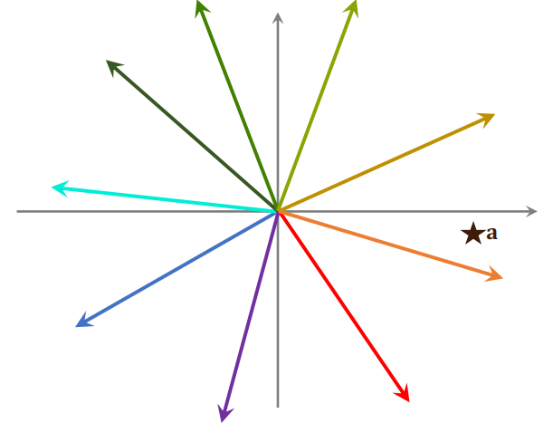
给定一个向量 ，可以把 和区域中所有向量做对比，并计算他们的相似度，这一步的计算开销不大。找出最相似的一个向量，并把这个向量所有点给取出来，再和向量 计算相似度。
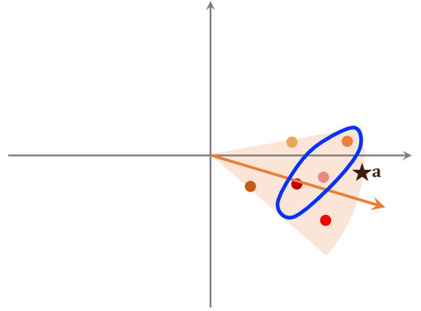
最后找到最相似的 个物品，那么这 个物品就是最近邻查找的结果，并进行返回。
 微信
微信 支付宝
支付宝